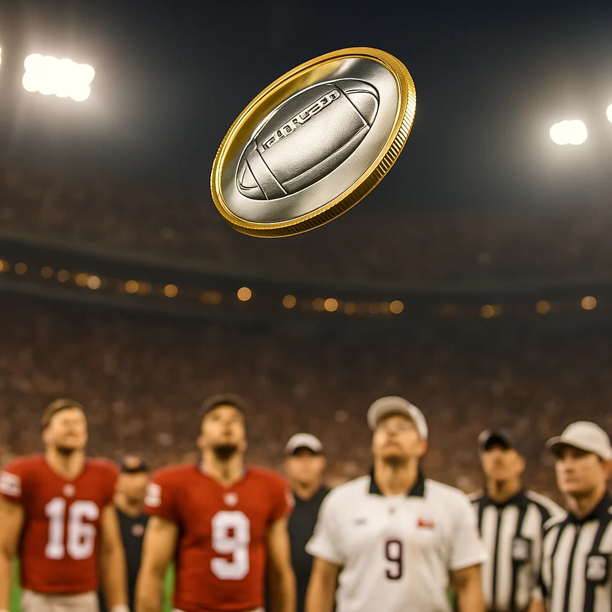

The Coin That Flips the Super Bowl
Indialantic, Florida · Collectibles
Did you know that every Super Bowl begins with one small, unforgettable moment — the coin toss? That shining flip marks the official start of the game and has become one of the most recognizable traditions in sports. Each year, an official coin is specially minted for the event, featuring the logos of the two competing teams on one side and the Super Bowl emblem on the other.
The coin is produced by The Highland Mint, a full-service mint that has created the official Super Bowl flip coin since 1993. The company is located near the beach towns of Indialantic and Indian Harbour Beach, in Melbourne, Florida — part of Florida’s scenic Space Coast, where barrier islands stretch between the Indian River Lagoon and the Atlantic Ocean.
A Space Coast Story of Craftsmanship
Founded in the early 1980s, The Highland Mint has grown from a small regional business into a recognized manufacturer of officially licensed collectibles for major sports leagues. Over the decades, its reputation for precision and artistry has only deepened — a testament to the care behind every creation.
Inside the company’s 50,000-square-foot facility, the entire process happens under one roof. Each coin goes through several stages — design, tooling, striking, polishing, and packaging — all handled by a trained production team. The result is a precisely made, limited-edition coin created for one of the most-watched sporting events in the world.
Precision from a Coastal Community
From this coastal community on Florida’s Space Coast, The Highland Mint continues to demonstrate the value of precision, consistency, and craftsmanship — proof that world-class work can come from places full of quiet pride.
Bea’s Notes
Bea the Otter shares stories that celebrate the people, places, and creativity behind meaningful gifts. Some stories simply inspire; others connect you with treasures featured in our shop. Every story reminds us to notice the good around us.
This article is based on public-domain historical facts and original writing by the Bea the Otter team.